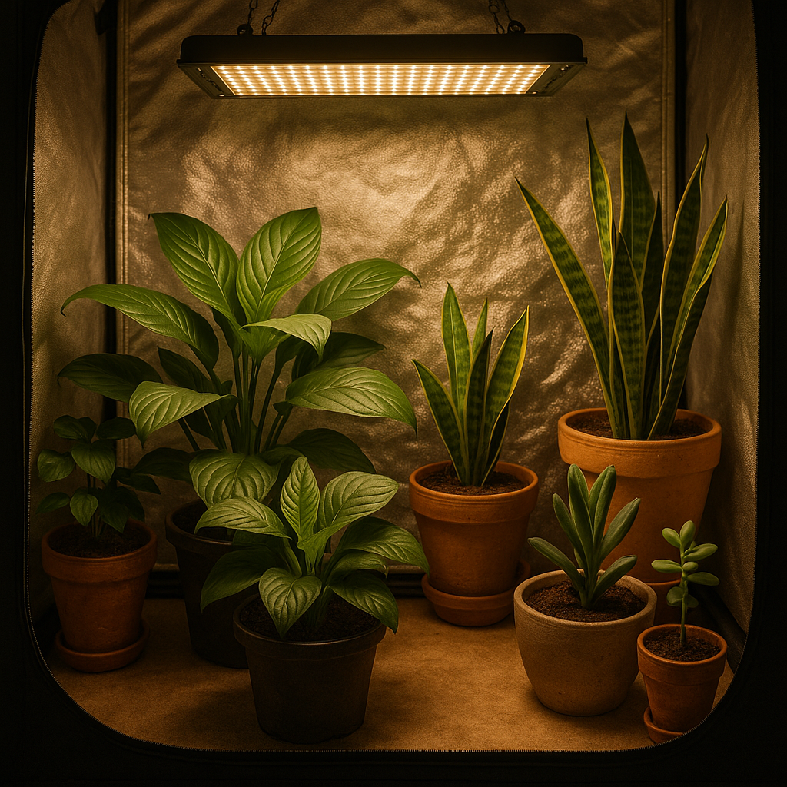

🌿 Cultivo Indoor: Como Criar um Jardim Dentro de Casa
Nem todo mundo tem uma varanda ensolarada ou quintal à disposição. Mas a boa notícia é que o cultivo indoor permite criar um jardim vibrante dentro de casa — mesmo em apartamentos compactos ou ambientes com pouca luz natural.
Cultivar plantas dentro de casa é mais do que uma solução estética: é também uma forma de trazer bem-estar, melhorar a qualidade do ar e criar um cantinho verde e relaxante, sem comprometer a segurança dos nossos gatos.
1. Escolha as espécies certas
Algumas plantas se adaptam melhor à vida indoor. Prefira aquelas que toleram sombra ou luz indireta, como Calatheas, Marantas, Zamioculcas, Peperômias e Pileas. Ah, e claro, sempre verifique se são seguras para gatos!
2. Iluminação é tudo
Se o ambiente for muito escuro, invista em luzes artificiais específicas para plantas, como lâmpadas LED de espectro completo. Elas imitam a luz solar e ajudam as plantas a se desenvolverem com saúde mesmo em locais sem janelas.
3. Cuidado com o excesso de água
Plantas em ambientes internos costumam demorar mais para secar. Evite regar por rotina — sinta o solo antes. O uso de substratos bem drenados e vasos com furos é essencial para evitar o apodrecimento das raízes.
4. Ambientes seguros para gatos
Posicione as plantas fora do alcance se forem tóxicas, ou priorize espécies atóxicas. Usar suportes suspensos, prateleiras altas ou proteger vasos com pedras decorativas pode evitar curiosidades perigosas.
5. Monitoramento e adaptação
Observe como suas plantas reagem ao ambiente. Folhas amarelas, crescimento estagnado ou murchas são sinais de que algo precisa ser ajustado — seja a luz, o local ou a frequência de rega.
O cultivo indoor é uma jornada. Aos poucos, você aprende a linguagem das plantas e adapta o espaço para que elas e seus gatos convivam em perfeita harmonia.
← Voltar para o blog